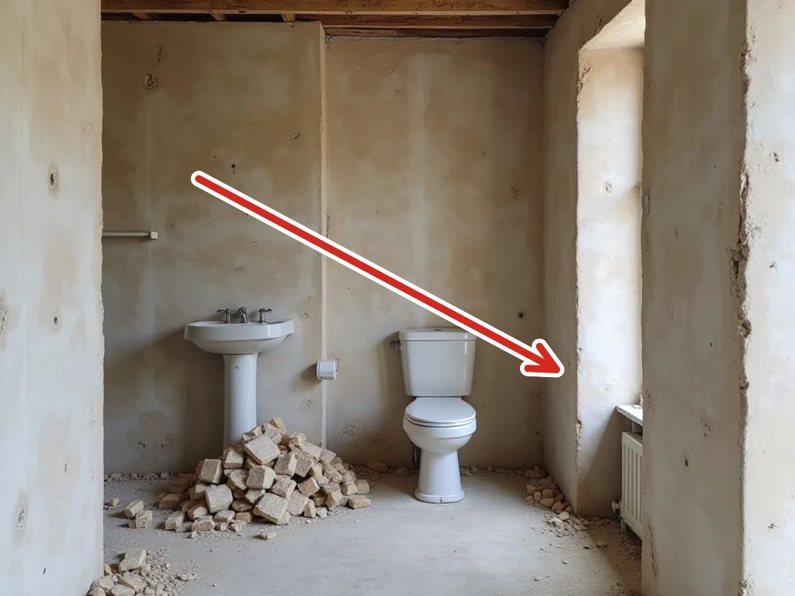

Wernersen Byg & VVS
Badeværelsesrenovering — Solbjergvej 14
Gammelt inventar revet ud og vægge forberedt

Wernersen Byg & VVSCVR 12 34 56 78
+45 33 12 34 56
hej@wernersen-byg.example
hej@wernersen-byg.example
wernersen-byg.example
Side 1 af 3
Side 1 af 3